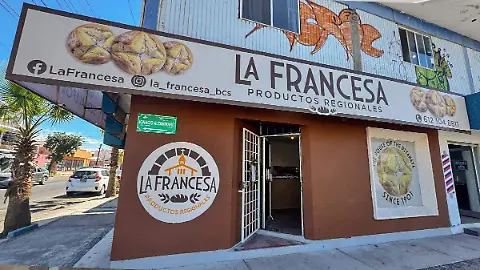
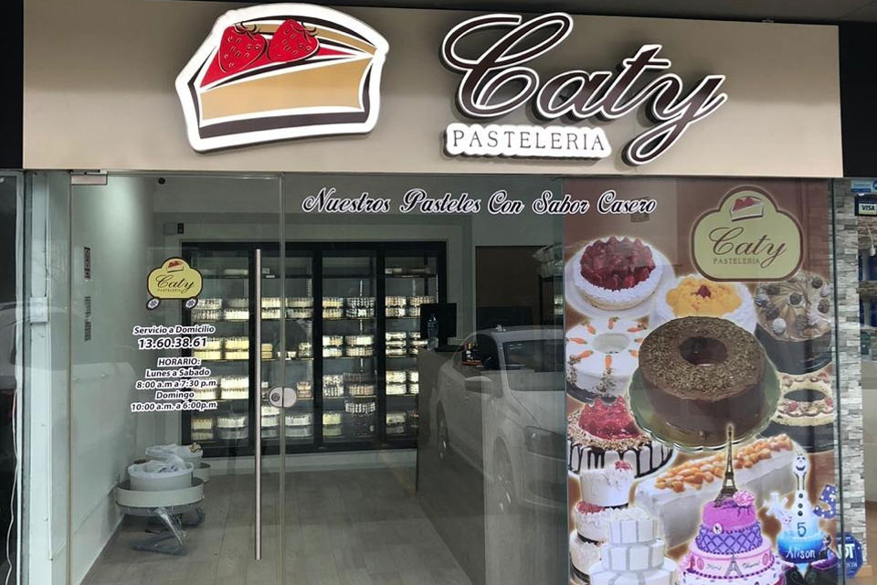

Surcusales
Pan La Paz
Una de nuestras sucursales mas conocidas y la mas cotizada es la Pan la Paz.

La Francesa
La sucursal la "Francesa" es otra de nuestrras sucursales donde tenemos pan mas creados e inspirados en panes Franceses.

Pasteleria Caty
La pasteleria "caty" es nuestra principal sucursal dedicada a pasteles de alta calidad e ingredienrtes pedidos al gusto, eso hace la diferencia de otras pastelerias.

Panaderia La Artesanal
Nuestra ultima Panaderia y la mas reciente, echa dedicada a fabricar panes "Artesanal" esta sucursal es la indicada para ti si eres de los gustos Artesanales